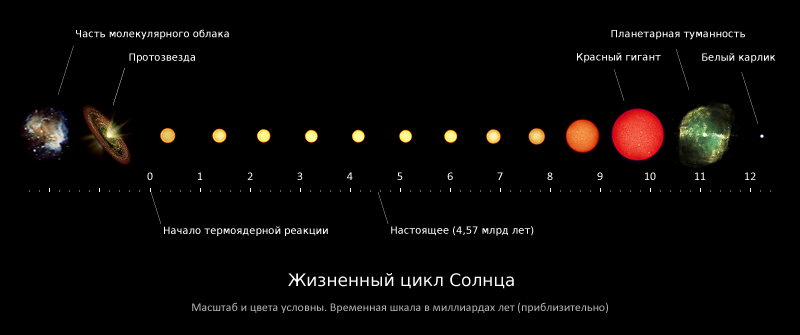

Солнце — одна из звёзд нашей Галактики (Млечный Путь) и единственная звезда Солнечной системы. Вокруг Солнца обращаются другие объекты этой системы: планеты и их спутники, карликовые планеты и их спутники, астероиды, метеороиды, кометы и космическая пыль.
По спектральной классификации Солнце относится к типу G2V (жёлтый карлик). Средняя плотность Солнца составляет 1,4 г/см³ (в 1,4 раза больше, чем у воды). Эффективная температура поверхности Солнца — 5780 кельвин. Поэтому Солнце светит почти белым светом, но прямой свет Солнца у поверхности нашей планеты приобретает некоторый жёлтый оттенок из-за более сильного рассеяния и поглощения коротковолновой части спектра атмосферой Земли (при ясном небе, вместе с голубым рассеянным светом от неба, солнечный свет вновь даёт белое освещение).
Солнечное излучение поддерживает жизнь на Земле (свет необходим для начальных стадий фотосинтеза), определяет климат.
Солнце состоит из водорода (≈73 % от массы и ≈92 % от объёма), гелия (≈25 % от массы и ≈7 % от объёма) и других элементов с меньшей концентрацией: железа, никеля, кислорода, азота, кремния, серы, магния, углерода, неона, кальция и хрома. На 1 млн атомов водорода приходится 98 000 атомов гелия, 851 атом кислорода, 398 атомов углерода, 123 атома неона, 100 атомов азота, 47 атомов железа, 38 атомов магния, 35 атомов кремния, 16 атомов серы, 4 атома аргона, 3 атома алюминия, по 2 атома никеля, натрия и кальция, а также малое количество прочих элементов. Масса Солнца составляет 99,866 % от суммарной массы всей Солнечной системы.
Солнечный спектр содержит линии ионизированных и нейтральных металлов, а также водорода и гелия. В нашей Галактике (Млечный Путь) насчитывается от 100 до 400 миллиардов звёзд. При этом 85 % звёзд нашей галактики — это звёзды, менее яркие, чем Солнце (в большинстве своём красные карлики). Как и все звёзды главной последовательности, Солнце вырабатывает энергию путём термоядерного синтеза. В случае Солнца подавляющая часть энергии вырабатывается при синтезе гелия из водорода.
Солнце — ближайшая к Земле звезда. Средняя удалённость Солнца от Земли — 149,6 млн км — приблизительно равна астрономической единице, а видимый угловой диаметр при наблюдении с Земли, как и у Луны, — чуть больше полградуса (31—32 минуты). Солнце находится на расстоянии около 26 000 световых лет от центра Млечного Пути и вращается вокруг него, делая один оборот за 225—250 миллионов лет. Орбитальная скорость Солнца равна 217 км/с — таким образом, оно проходит один световой год за 1400 земных лет, а одну астрономическую единицу — за 8 земных суток.
В настоящее время Солнце находится во внутреннем крае рукава Ориона нашей Галактики, между рукавом Персея и рукавом Стрельца, в так называемом Местном межзвёздном облаке — области повышенной плотности, расположенной, в свою очередь, в имеющем меньшую плотность Местном пузыре — зоне рассеянного высокотемпературного межзвёздного газа. Из звёзд, принадлежащих 50 самым близким звёздным системам в пределах 17 световых лет, известным в настоящее время, Солнце является четвёртой по яркости звездой (его абсолютная звёздная величина +4,83m).
Общие сведения
Солнце принадлежит к первому типу звёздного населения. Одна из распространённых теорий возникновения Солнечной системы предполагает, что её формирование было вызвано взрывами одной или нескольких сверхновых звёзд[13]. Это предположение основано, в частности, на том, что в веществе Солнечной системы содержится аномально большая доля золота и урана, которые могли бы быть результатом эндотермических реакций, вызванных этим взрывом, или ядерного превращения элементов путём поглощения нейтронов веществом массивной звезды второго поколения.
Жизненный цикл
Солнце является молодой звездой третьего поколения (популяции I) с высоким содержанием металлов, то есть, оно образовалось из останков звёзд первого и второго поколений (соответственно популяций III и II).
Текущий возраст Солнца (точнее время его существования на главной последовательности), оценённый с помощью компьютерных моделей звёздной эволюции, равен приблизительно 4,5 миллиарда лет.
